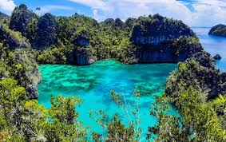
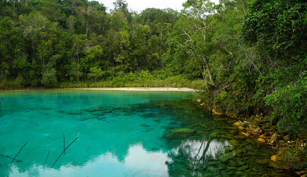
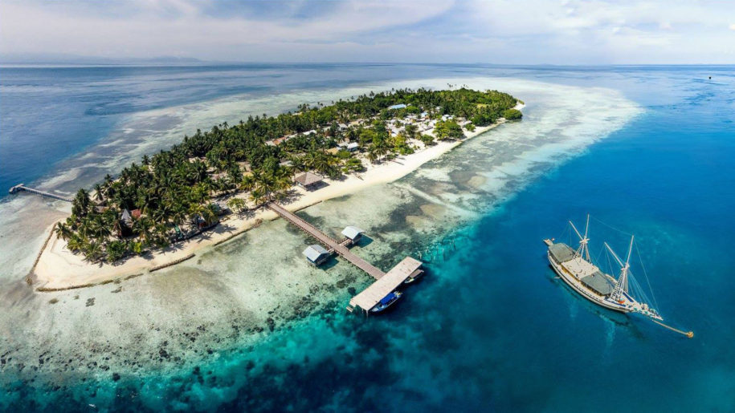
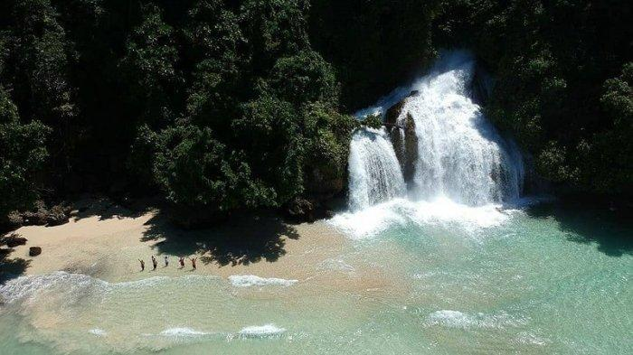
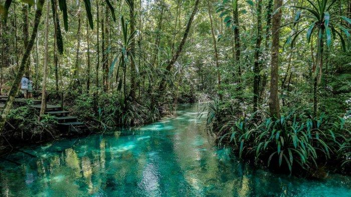
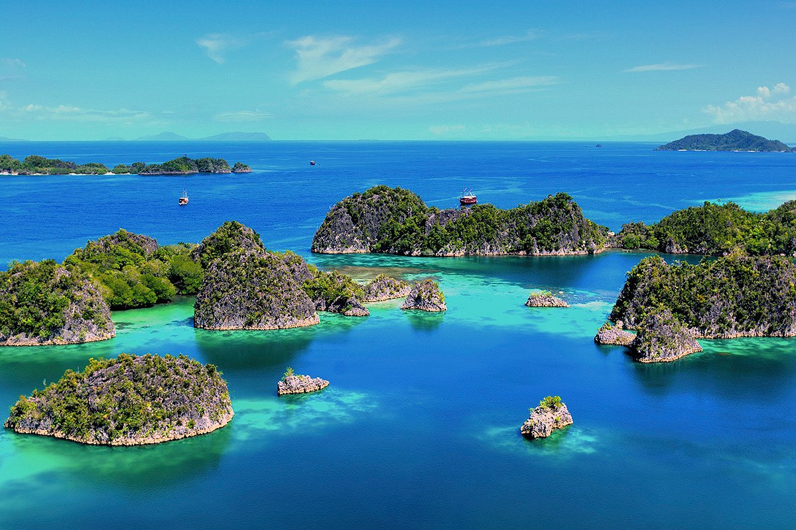

Laguna Bintang Raja Ampat
Laguna Bintang adalah salah satu destinasi wisata yang menakjubkan di Raja Ampat. Terkenal dengan air lautnya yang jernih dan berwarna biru kehijauan, laguna ini dikelilingi oleh pulau-pulau karang yang membentuk formasi bintang. Keindahan alam yang luar biasa ini menjadikan Laguna Bintang sebagai salah satu spot fotografi terbaik di Raja Ampat.
Pengunjung dapat menikmati pemandangan menakjubkan dari atas bukit di sekitar laguna, yang menawarkan panorama 360 derajat dari kepulauan Raja Ampat. Air yang tenang dan jernih di laguna ini juga menjadi rumah bagi berbagai jenis ikan tropis dan terumbu karang yang berwarna-warni.
Lokasi: Kepulauan Raja Ampat, Papua Barat
Aktivitas: Snorkeling, diving, kayaking, menikmati pemandangan
Waktu Terbaik untuk Berkunjung: Oktober hingga April
Tiket Masuk: Rp 1.000.000 per orang (termasuk biaya konservasi dan retribusi)
Danau Ayamaru Raja Ampat
Danau Ayamaru adalah salah satu keajaiban alam tersembunyi di Raja Ampat. Terletak di Pulau Batanta, danau ini menawarkan pemandangan yang memukau dengan air yang jernih. Saking jernihnya, Anda bisa melihat dasar danau yang dipenuhi oleh bebatuan menyerupai terumbu karang dan ikan-ikan yang indah.
Lokasi: Pulau Batanta, Raja Ampat, Papua Barat
Aktivitas: Trekking, birdwatching, fotografi, menikmati keindahan alam
Waktu Terbaik untuk Berkunjung: Sepanjang tahun, tetapi hindari musim hujan (Juni-September)
Tiket Masuk: Rp 100.000 per orang (biaya guide lokal tidak termasuk)
Desa Arborek Raja Ampat
Desa Arborek adalah sebuah desa kecil yang terletak di kepulauan Raja Ampat. Dikenal sebagai "Kampung Penyu", desa ini menawarkan pengalaman unik untuk berinteraksi dengan masyarakat lokal dan menikmati keindahan bawah laut yang luar biasa.
Desa ini terkenal dengan kerajinan tangan lokalnya, terutama anyaman dari daun pandan. Pengunjung dapat melihat langsung proses pembuatan kerajinan ini dan bahkan mencoba membuatnya sendiri.
Lokasi: Pulau Arborek, Raja Ampat, Papua Barat
Aktivitas: Snorkeling, diving, belajar kerajinan tangan lokal, berinteraksi dengan masyarakat setempat
Waktu Terbaik untuk Berkunjung: Oktober hingga April
Tiket Masuk: Rp 50.000 per orang (kontribusi untuk desa)
Air Terjun Kiti Kiti Raja Ampat
Air Terjun Kiti Kiti adalah salah satu keajaiban alam tersembunyi di Raja Ampat. Terletak di Pulau Batanta, air terjun ini menawarkan pemandangan yang memukau dengan aliran air tawar yang jernih mengalir langsung ke laut.
Pengunjung dapat menikmati pengalaman unik berenang di kolam air tawar yang terbentuk di bawah air terjun, sambil melihat pemandangan laut yang indah. Air terjun ini juga dikelilingi oleh hutan tropis yang lebat, menjadikannya tempat yang ideal untuk penggemar alam dan fotografi.
Lokasi: Pulau Batanta, Raja Ampat, Papua Barat
Aktivitas: Berenang, trekking, fotografi, menikmati keindahan alam
Waktu Terbaik untuk Berkunjung: Musim kemarau (Oktober hingga April)
Tiket Masuk: Rp 100.000 per orang (termasuk biaya pemandu lokal)
Kali Biru Raja Ampat
Kali Biru, yang berarti "Sungai Biru" dalam bahasa Indonesia, adalah salah satu keajaiban alam yang menakjubkan di Raja Ampat. Terletak di Pulau Waigeo, Kali Biru terkenal dengan airnya yang jernih dan berwarna biru cerah yang kontras dengan hutan tropis di sekelilingnya.
Pengunjung dapat menikmati pemandangan menakjubkan saat menyusuri sungai dengan perahu kecil atau kayak. Air yang jernih memungkinkan Anda untuk melihat berbagai jenis ikan air tawar dan formasi batu di dasar sungai. Kali Biru juga merupakan tempat yang ideal untuk berenang dan bersantai di tengah alam yang masih asri.
Lokasi: Pulau Waigeo, Raja Ampat, Papua Barat
Aktivitas: Menyusuri sungai dengan perahu/kayak, berenang, fotografi, menikmati keindahan alam
Waktu Terbaik untuk Berkunjung: Oktober hingga April (musim kemarau)
Tiket Masuk: Rp 150.000 per orang (termasuk biaya konservasi dan pemandu lokal)
Kepulauan Piyanemo Raja Ampat
Kepulauan Piaynemo adalah salah satu ikon wisata Raja Ampat yang paling terkenal. Terletak di bagian utara Raja Ampat, kepulauan ini terdiri dari pulau-pulau karst kecil yang menjulang dari laut biru kehijauan yang jernih.
Daya tarik utama Pianyemo adalah pemandangan spektakuler dari puncak bukit yang dapat diakses melalui tangga. Dari atas, pengunjung dapat menikmati panorama 360 derajat pulau-pulau karst yang tersebar di lautan biru, menciptakan pemandangan yang sering disebut sebagai "Surga Kecil" Raja Ampat.
Lokasi: Kepulauan Piaynemo, Raja Ampat, Papua Barat
Aktivitas: Mendaki bukit untuk menikmati pemandangan, snorkeling, kayaking, fotografi
Waktu Terbaik untuk Berkunjung: Oktober hingga April (musim kemarau)
Tiket Masuk: Rp 200.000 per orang (termasuk biaya konservasi dan retribusi)